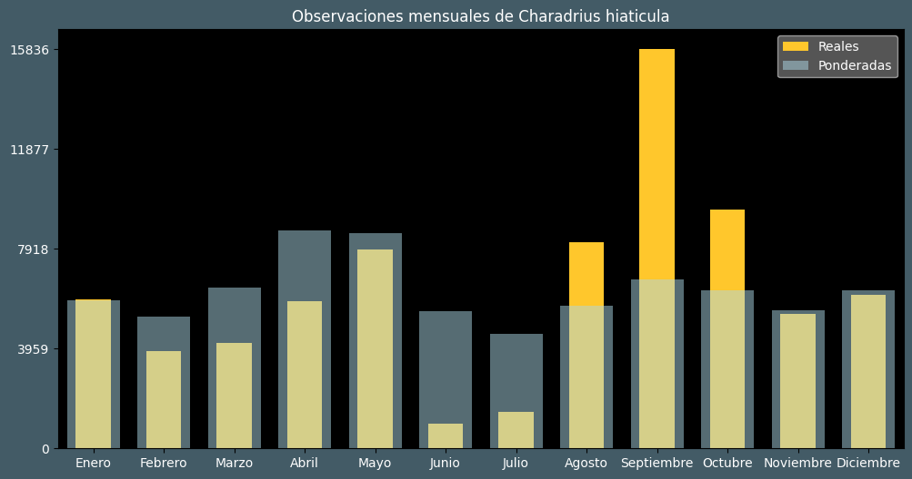

Observaciones por mes
Observations por hora

Categoría IUCN: LC
Género: Charadrius
Familia: Charadriidae
Orden: Charadriiformes
Descubrimiento: Linnaeus (1758)
| Idioma | Nombre |
|---|---|
| Afrikaans (af) | Ringnekstrandkiewiet |
| Arabic (ar) | زقزاق مطوق |
| Belarusian (be) | Вялiкi зуёк |
| Bulgarian (bg) | Пясъчен дъждосвирец |
| Catalan (ca) | Corriol anellat gros |
| Chinese (zh) | 剑鸻 |
| Chinese traditional (zh-TW) | 環頸鴴〔劍鴴〕 |
| Croatian (hr) | Kulik blatarić |
| Czech (cs) | Kulík písečný |
| Danish (da) | Stor præstekrave |
| Dutch (nl) | Bontbekplevier |
| English (en) | Common ringed plover |
| Estonian (et) | Liivatüll |
| Finnish (fi) | Tylli |
| French (fr) | Pluvier grand-gravelot |
| German (de) | Sandregenpfeifer |
| Greek (el) | Αμμοσφυριχτής |
| Hebrew (he) | חופמי צווארון |
| Hungarian (hu) | Parti lile |
| Icelandic (is) | Sandlóa |
| Indonesian (id) | ? |
| Italian (it) | Corriere grosso |
| Japanese (ja) | ハジロコチドリ |
| Korean (ko) | 흰죽지꼬마물떼새 |
| Latvian (lv) | Smilšu tārtiņš |
| Lithuanian (lt) | Jūrinis kirlikas |
| Maceodnian (mk) | Среден пескар |
| Malayalam (ml) | വലിയ മോതിരക്കോഴി |
| North_sami (se) | Buvvedat |
| Norwegian (no) | Sandlo |
| Persian (fa) | سلیم طوقی بزرگ |
| Polish (pl) | Sieweczka obrożna |
| Portuguese (pt) | Borrelho-grande-de-coleira |
| Russian (ru) | Галстучник |
| Serbian (sr) | Žalar blatarić |
| Slovak (sk) | Kulík piesočný |
| Spanish (es) | Chorlitejo grande |
| Swedish (sv) | Större strandpipare |
| Thai (th) | นกหัวโตเล็กขาส้ม |
| Turkish (tr) | Halkalı cılıbıt |
| Ukrainian (uk) | Пісочник великий |